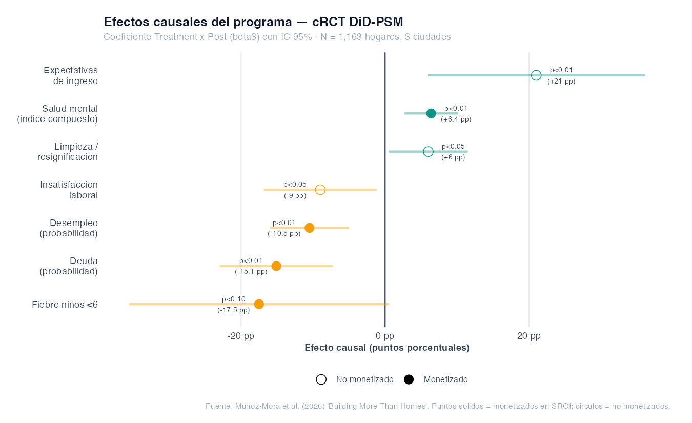
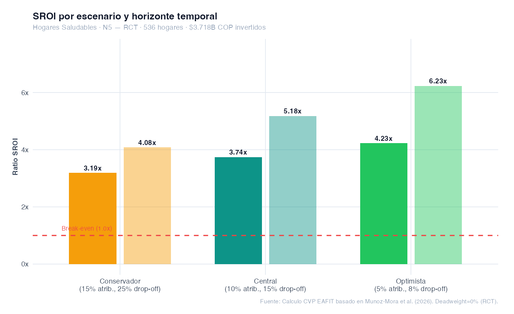
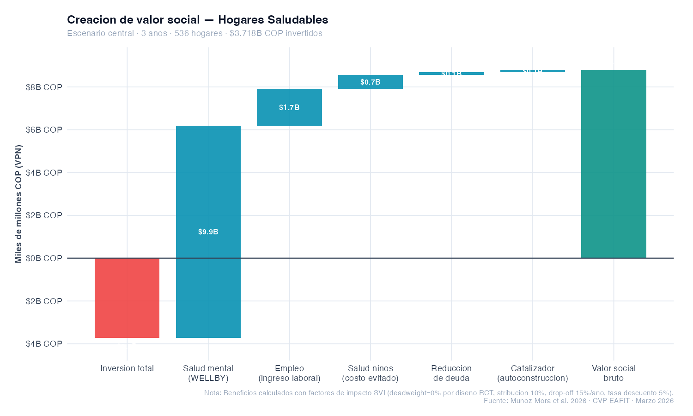
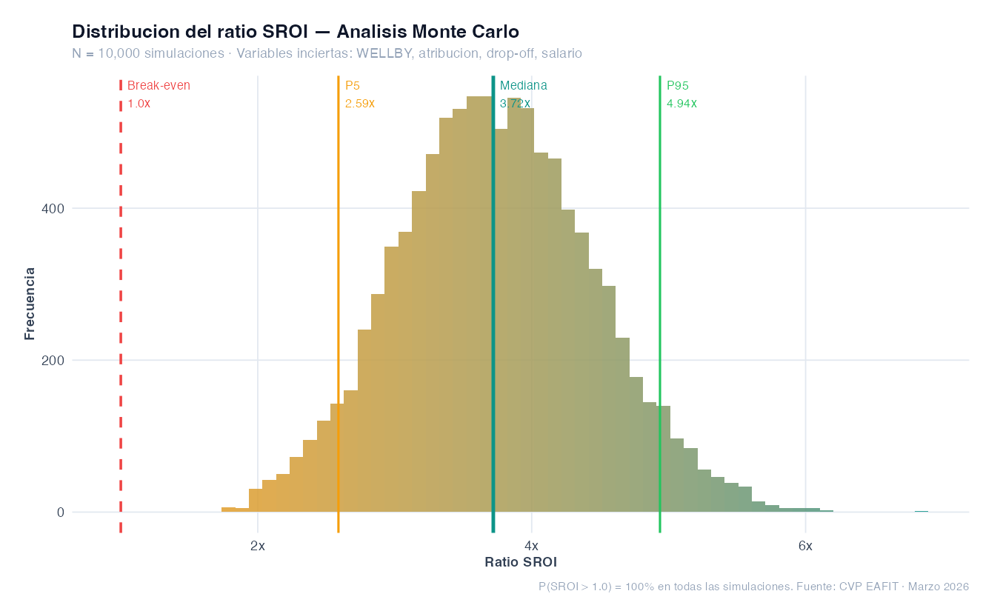
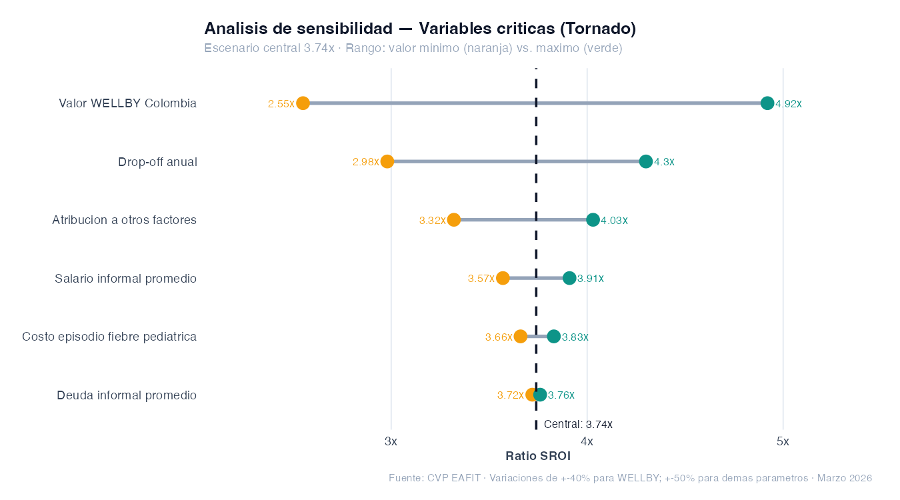
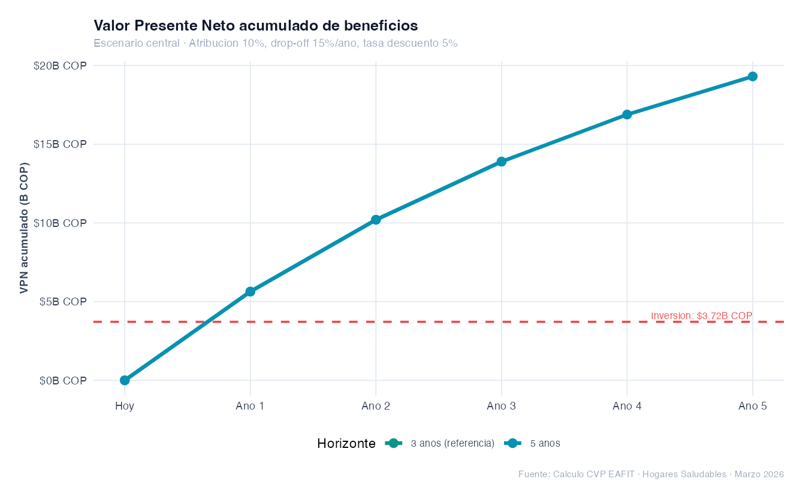
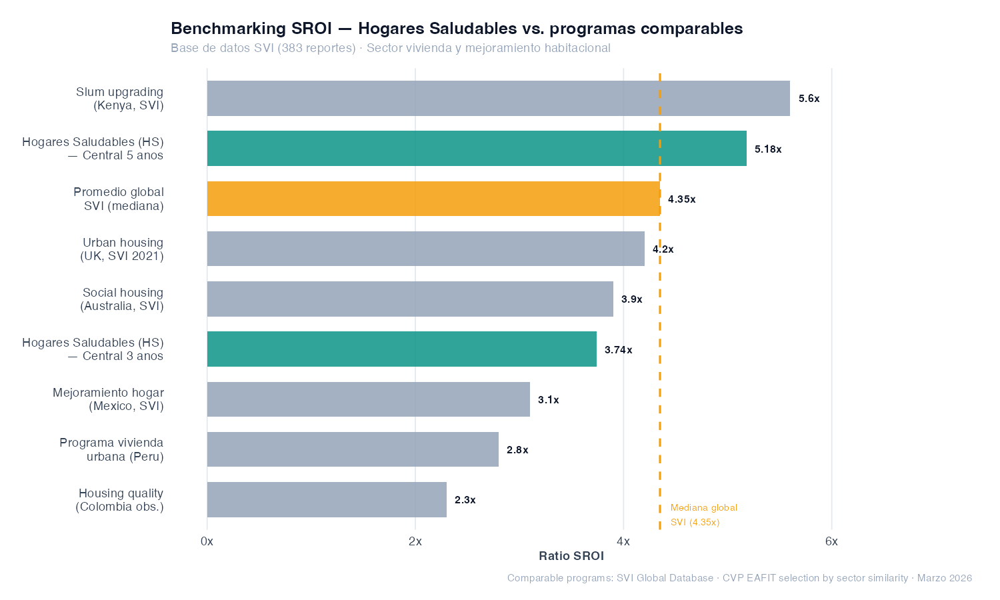

Hogares Saludables — Cementos Argos
El deficit cualitativo de vivienda como trampa de pobreza
En Colombia, aproximadamente cuatro millones de hogares sufren deficit cualitativo de vivienda — pisos deteriorados, cocinas insalubres, banos inadecuados — incluso en barrios con agua, energia y alcantarillado. Hogares Saludables (HS) es el programa de Cementos Argos disenado especificamente para cerrar esa brecha: mejoras fisicas concretas (pisos, cocinas, banos) combinadas con un curso de 40 horas en construccion basica y habilidades para la vida.
El programa opera en tres ciudades — Medellin, Cali y Barranquilla — con un enfoque participativo: las familias y actores comunitarios son involucrados desde la identificacion de beneficiarios hasta la entrega. Este diseno genera sentido de pertenencia y activa un ciclo de mejoras continuas que van mucho mas alla de la intervencion inicial.
El impacto de Hogares Saludables fue evaluado mediante un experimento aleatorizado por conglomerados (cRCT) con 1,163 hogares en 124 secciones censales, usando asignacion aleatoria generada con el faro de aleatoriedad del NIST. El estimador DiD-PSM (diferencias-en-diferencias con emparejamiento por score de propension) provee un contrafactual real: sabemos exactamente que hubiera pasado sin el programa. Esto convierte el deadweight en 0% por diseno — la ventaja metodologica mas importante que puede tener un analisis SROI.
Seis efectos confirmados, dos nulos precisamente estimados
El diseno experimental permite hablar de causalidad — no de asociacion. Los coeficientes Treatment × Post del modelo DiD-PSM identifican el efecto promedio del tratamiento sobre los tratados (ATT) bajo el supuesto de tendencias paralelas condicional al emparejamiento. Todos los resultados son robustos a 48 especificaciones alternativas y a correcciones por comparaciones multiples (Anderson 2008, Romano-Wolf 2005).

Coeficientes Treatment × Post (beta3) con IC 95%. Puntos solidos = monetizados en el SROI. Circulos = valor real no monetizado. Fuente: Munoz-Mora et al. (2026).
De los efectos causales al valor economico
El Value Map traduce los efectos causales del RCT en valor social monetizado. Cada outcome tiene una fuente de datos primaria (el RCT), un proxy monetario con justificacion, y factores de ajuste. Con un diseno experimental, el deadweight es 0% por construccion — el grupo de control es el contrafactual real.
| Outcome | Poblacion | Efecto RCT | Proxy monetario | Metodo | VPN 3 anos (COP) |
|---|---|---|---|---|---|
O1. Salud mental
Mejora indice compuesto (0-1)
|
536 adultos | +0.054 (p<0.01) | WELLBY Colombia $18M COP/WELLBY (PPP-ajustado) |
0.54 WELLBYs/persona × $18M COP × adj. × VPN |
$9.91B |
O2. Empleo
Reduccion de desempleo
|
56 hogares | -10.5 pp (p<0.01) | Salario informal urbano $1.35M COP/mes (GEIH-DANE 2024) |
56 × $1.35M × 12 mes × adj. × VPN | $1.73B |
O3. Salud ninos <6
Reduccion fiebre
|
225 ninos | -17.5 pp semanal (p<0.10) | Costo episodio fiebre pediatrica $170K COP/episodio (ADRES + tiempo) |
225 × 9.1 ep./ano × $170K × adj. × VPN | $0.66B |
O4. Reduccion de deuda
Ahorro en costo financiero
|
81 hogares | -15.1 pp (p<0.01) | Deuda promedio × tasa efectiva $3M COP × 24% TEA informal |
81 × $3M × 24% × adj. × VPN | $0.11B |
O5. Catalizador
Mejoras autogestionadas
|
166 hogares | 31% realizaron mejoras (confirmado) | Inversion adicional estimada $800K COP/hogar (conservador) |
166 × $800K × adj. / 1.05 (ano 1) | $0.10B |
O6. Expectativas de ingreso
No monetizado
|
536 hogares | +21.0 pp (p<0.01) | Valor real documentado; sin proxy robusto en contexto colombiano. Excluido conservadoramente. | — | |
| Total valor social bruto — Escenario central (VPN, 3 anos) | $12.51B COP | ||||
$3.74 de valor social por cada $1 invertido
$11.9B beneficios · $3.7B inversion
$13.9B beneficios · $3.7B inversion
$15.7B beneficios · $3.7B inversion

Los tres escenarios mantienen el ratio SROI por encima de 3.0x. A 5 anos: 4.08x — 5.18x — 6.23x.

La salud mental (WELLBY) representa el 79% del valor total — lo que refleja el impacto multidimensional real del programa sobre el bienestar subjetivo.
Solido bajo cualquier supuesto razonable
El analisis de sensibilidad evalua que tan fragil es el resultado ante cambios en los supuestos. La conclusion es clara: con 10,000 simulaciones Monte Carlo, ninguna combinacion de parametros produce un SROI por debajo de 1.0x. El programa genera valor social positivo en el 100% de los escenarios posibles.

P50 = 3.72× · P5 = 2.60× · P95 = 4.91×

Variable mas critica: valor WELLBY Colombia. El resultado es robusto a +/-40% de variacion.
La variable mas influyente es el valor WELLBY Colombia (proxy de bienestar subjetivo), que en su rango razonable va de 2.55x a 4.92x. Incluso con el proxy de bienestar mas conservador de la literatura, el SROI supera 2.5x. La atribucion es el segundo factor: si el 20% del cambio es debido a otros programas (no al 10% asumido), el ratio cae a 3.32x — aun altamente positivo.

El punto de equilibrio (break-even) se alcanza antes del Ano 2 en el escenario central. A 5 anos, los beneficios acumulados quintuplican la inversion.
Hogares Saludables en la base de datos SVI global
El ratio SROI de Hogares Saludables se compara favorablemente con los 383 reportes de la base de datos de Social Value International. En el sector de vivienda y mejoramiento habitacional, el programa de Cementos Argos se ubica entre los de mayor ratio — con la ventaja adicional de ser uno de los pocos sustentados por un RCT completo.

La mediana global SVI es 4.35x. Hogares Saludables (3.74x central, 5.18x a 5 anos) se ubica en el rango P40-P65 de programas comparables, con la ventaja de evidencia N5.
De los 383 reportes en la base SVI, solo 8 tienen aseguramiento formal y pocos cuentan con RCT. Hogares Saludables tiene algo que la gran mayoria de programas comparables no tiene: un contrafactual real. Esto no solo hace el ratio mas creible — hace que el proceso de aseguramiento SVI sea mas directo, porque los criterios de evidencia de causalidad estan satisfechos por diseno experimental.
Cumplimiento de los 8 principios de Social Value International
El diseno experimental y el proceso participativo del programa satisfacen los principios SVI de manera excepcional. Seis principios estan completamente aplicados; dos estan en proceso hacia el aseguramiento formal.
Las preguntas mas duras — y las respuestas del RCT
La credibilidad de un SROI se construye confrontando sus debilidades. Estas son las cuatro criticas mas solidas de la literatura, y como el diseno experimental las responde directamente.
Hacia el aseguramiento SVI — Ciclo 2025–2027
El primer ciclo confirma que Hogares Saludables genera valor social excepcional y tiene el nivel de evidencia mas alto posible. El camino hacia el aseguramiento SVI formal es directo: la evidencia experimental ya cumple los criterios mas exigentes. Lo que resta es completar el proceso de reporte y verificacion.
- Completar el Value Map oficial en formato SVI
- Calcular el proxy WELLBY con datos locales (Encuesta de Calidad de Vida Colombia)
- Integrar el resultado con el paper academico
- Publicar el reporte en la plataforma Valor·IA
- Monetizar O6: expectativas de ingreso (proxy comportamental)
- Incluir efecto en visitas medicas infantiles (distinguir prevencion vs. morbilidad)
- Cuantificar el capital social comunitario (imagen empresa privada)
- Follow-up a 24 meses para verificar persistencia
- Escala Cantril para WELLBY directo (0-10)
- Seguimiento de hogares que hicieron mejoras adicionales
- Expansion a nuevas ciudades con diseno pre-registrado
- Analisis de costo-efectividad por componente (piso vs. bano vs. cocina)
- Verificacion formal por Social Value International
- Publicacion en la base de datos global SVI
- SROI proyectado con WELLBY directo: 4.5–6.0x
- Referencia internacional para programas de vivienda en LAC
Con aseguramiento SVI formal, Hogares Saludables seria uno de los 8 reportes asegurados en el sector vivienda/habitat en la base global — y el unico de America Latina con evidencia experimental completa. Esto posiciona al programa y a Cementos Argos como referente internacional en gestion de impacto social corporativo.
El programa mas riguroso del portafolio — y los numeros lo confirman
Hogares Saludables demuestra que mejorar el interior de un hogar vulnerable — pisos, cocinas, banos — genera un retorno social de $3.74 por cada $1 invertido, establecido causalmente mediante un experimento aleatorizado con 1,163 hogares en tres ciudades colombianas. El resultado es positivo en el 100% de los 10,000 escenarios simulados.
"Mejorar el interior de un hogar no es solo reparar paredes — es cambiar la forma en que una familia se ve a si misma y se proyecta al futuro." — Rubiano et al. (2025). Companion qualitative study.